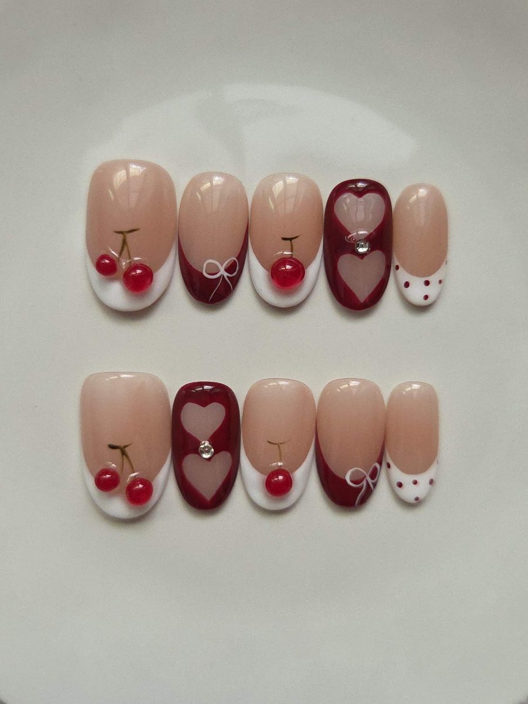
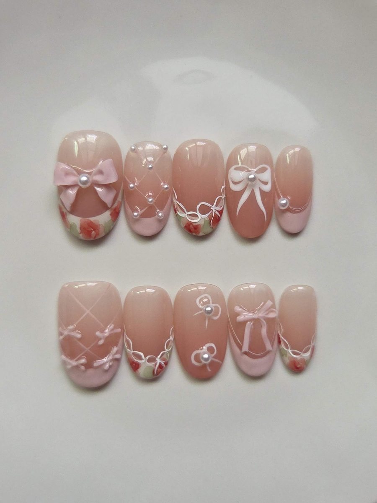
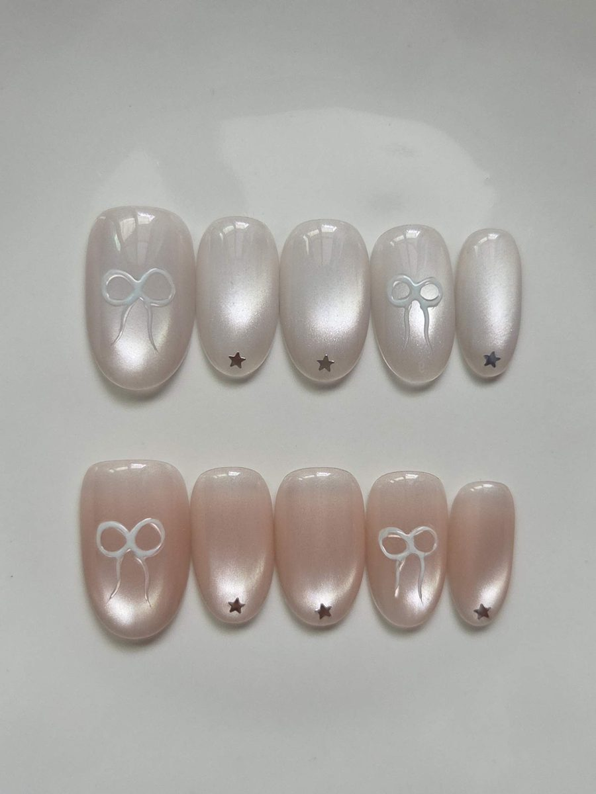
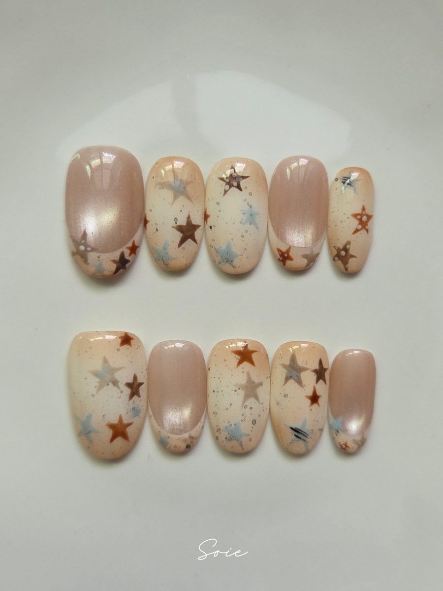
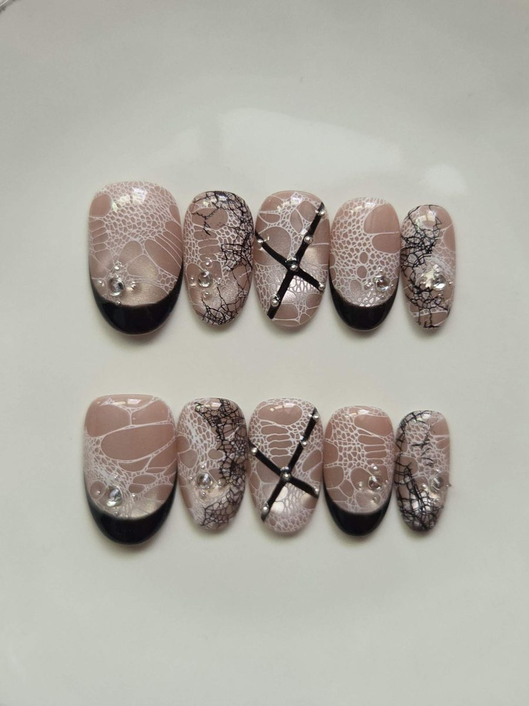

生成式 AI ・ 教學簡報
AI 怎麼讓你
在手機上試戴
穿戴甲？
「直接貼圖」和「Diffusion 生成」差在哪？
指甲的弧度和光影又是怎麼做出來的？
內容全部來自我的 LLM Wiki（6 篇資料）・ 照片為我的手工穿戴甲作品
← → 鍵或下方按鈕換頁
「直接貼圖」和「Diffusion 生成」差在哪？
指甲的弧度和光影又是怎麼做出來的？
內容全部來自我的 LLM Wiki（6 篇資料）・ 照片為我的手工穿戴甲作品
← → 鍵或下方按鈕換頁

把指甲圖直接貼到手上，和用 Diffusion 模型重新畫，效果差在哪？兩種方法各自怎麼處理指甲的曲面和光影？

在整張照片裡只佔一點點，模型要很精細，又要輕到能在手機上跑。
手指會轉、會彎，每片指甲的方向都不一樣。
指甲是曲面，不是一張平的貼紙；圖案在邊緣會「轉過去」。
凝膠表面有亮亮的鏡面反光，位置會跟著光線和角度改變。
右圖：看看指甲上的白色條狀高光和珍珠光澤。這些光影如果做不出來，試戴看起來就像「貼紙」。

一句話：路線一保證款式正確，光影是「假」的；路線二光影比較「真」，但款式可能被改掉。
手掌形狀固定，比會彎曲的整隻手好框；手掌也比較小，兩隻手疊在一起時比較不會搞混。
知道每根手指朝哪裡、哪根比較靠近鏡頭 → 貼圖要轉幾度。
但它沒有告訴我們：指甲的輪廓在哪，也沒有指甲表面的弧度。→ 需要下一步。

↑ 示意圖（用加雜訊的方式模擬），不是模型真正的輸出。
先把圖片壓縮成小的「潛在表示」，在小空間裡做 diffusion，再還原成圖片。比直接在像素上做便宜很多 —— Stable Diffusion 就是這樣來的。
壓太少訓練很慢，壓太多細節會不見。論文發現縮小 4 倍或 8 倍最剛好。
把要換款式的指甲遮起來，模型會參考周圍的畫面，把遮住的地方畫回去，其他地方保持原樣。
光線方向、膚色、反光都從整張照片推出來，不用自己設計反光。
代價：要一步一步取樣，比較慢；而且需要「精細到像素」的任務，壓縮可能會吃掉細節 —— 指甲上的手繪圖案正是這種東西。
只用 1k 張圖訓練也不會崩壞；多個結構圖可以疊加使用。
法向量圖記錄的是「表面每一點朝哪個方向」，也就是曲面資訊。
如果能估出指甲的法向量圖交給 ControlNet，生成的圖案就有機會順著弧度走。推論
結構不一定被完全遵守；而且光影仍然是 Diffusion 自己畫的，ControlNet 只管形狀。

這種款式很難用文字描述清楚
λ = 0：不看圖
λ = 1：完全照圖
它抓得到參考圖的內容和風格，但無法穩定保留細節。對手工穿戴甲來說，生成結果可能是「風格很像、但蕾絲紋路不一樣」的指甲。
研究者也發現「只用 IP-Adapter，細節會跑掉」，所以多加一整個網路專門保留細節。
遮罩區域裡的人物細節（例如刺青、痣）很難保留。換成指甲：指甲周圍的皮膚細節也可能被改掉。
小辭典：cross-attention ＝ 模型參考「外部提示」的通道；self-attention ＝ 畫面各部分「互相參考」的通道；UNet ＝ Diffusion 裡負責去雜訊的網路。
註：IDM-VTON 做的是衣服，不是指甲；這裡當作「完整生成式試戴系統」的參考。
| 路線一：AR 貼圖 | 路線二：Diffusion 生成 | |
|---|---|---|
| 款式還原 | ✅ 圖案直接貼上，不會被改 推論 | ⚠ 可能「風格像、細節不同」 |
| 光影 | ⚠ 用漸層「模擬」鏡面反光 | ✅ 依整張照片的上下文重畫 |
| 曲面 | ⚠ 只有平面遮罩 + 方向 | ✅ 可用深度 / 法向量圖當條件 |
| 立體裝飾 | ❌ 只能當平面圖 推論 | ⚠ 有機會畫出陰影，但形狀不保證 推論 |
| 速度 | ✅ 即時（iPad Pro 每幀 29.8 ms） | ❌ 多步取樣，慢 |
| 需要準備 | 指甲分割資料（ModiFace 標了 1,438 張） | 預訓練大模型 + 遮罩、姿勢等條件 |
| 適合 | 手機鏡頭即時試戴 推論 | 一張照片的高品質預覽、宣傳圖 推論 |
星星是畫在表面的平面圖案，細節多。貼圖能完整保留，只要補上反光就很像。
漂亮的地方在光澤隨角度變化。漸層假反光很難做出這種質感，生成式路線比較有機會。
櫻桃是凸起的立體裝飾，有側面和陰影。貼圖做不出立體感；生成式可能畫出陰影，但形狀不保證。
路線一的強項（款式正確）剛好是路線二的弱點，路線二的強項（光影自然）剛好是路線一的弱點。
比較「純貼圖」、「純生成」、「混合」三種做法，看哪一種最像真的戴上去。
6 篇資料都沒有「估計指甲 3D 形狀 / 法向量」的方法。
ControlNet 能吃法向量圖，但法向量圖要從哪裡來？→ 下一輪要 ingest 的資料。
1. MediaPipe Hands 為什麼先偵測「手掌」，而不是整隻手？
2. 只用 IP-Adapter 生成試戴圖，最可能出現什麼問題？
3. ModiFace 的 AR 試戴是怎麼做出指甲上的反光？
1. AR 貼圖 = 找手 → 找指甲 → 貼圖 + 假反光。快、款式準，但光影和曲面是近似的。
2. Diffusion 生成 = Inpainting + ControlNet（形狀）+ IP-Adapter（款式）。光影自然，但慢、細節可能跑掉。
3. 款式的特性決定路線：平面手繪適合貼圖，光澤質感需要生成，立體裝飾兩邊都還有挑戰。
每一張投影片下方都標了內容來自哪些 Wiki 頁，點了就能看到出處。